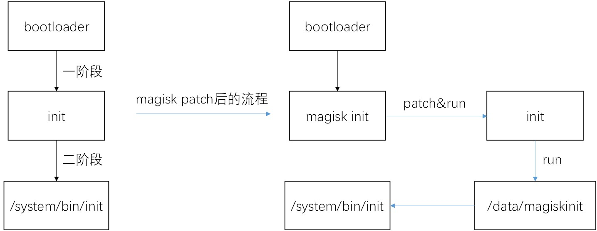

最近用上了 lsposed ，发现使用它做开发不用重启手机就能应用新代码，相比 xposed 方便多了，lsposed 又是基于 zygisk 做注入，于是决定来了解一下它的注入原理。阅读下面这几篇文章了解了 magisk 的原理以及 zygisk 的注入原理，知识点又干又硬，根据个人的理解梳理一下，分析的 magisk 版本是 v25.2
云手机底层技术揭密 : Android系统启动与Magisk原理 Zygisk 源码分析 zygisk原理简单分析和以及zygisk插件开发(1) zygisk原理简单分析和以及zygisk插件开发(2)
Magisk原理 先从 Magisk 出发，回忆一下 magisk root 的一种方式是在 magisk app 中选择 patch boot.img 文件，结束后拿到 boot.img 重新烧写就完成 root 了。在了解 magisk 对 boot.img 做了什么操作前先回顾 Android 系统的启动流程（截取图片来自Lsposed 技术原理探讨 && 基本安装使用 ）：
当系统正常加载时 bootloader 会决定加载 boot.img（解压刷机包能看到这个文件），并执行里面的一个 init 程序，init 程序会完成文件系统的挂载，magisk 正是替换了这个 init 程序，使得 magisk 能在 init 程序中做任何它想做的事情。
magisk 的 init 程序入口在 native/jni/init/init.cpp 的 main
1 2 3 4 5 6 7 8 9 10 11 12 13 14 15 16 17 int main (int argc, char *argv[]) { if (config.skip_initramfs) init = new LegacySARInit(argv, &config); else if (config.force_normal_boot) init = new FirstStageInit(argv, &config); else if (access("/sbin/recovery" , F_OK) == 0 || access("/system/bin/recovery" , F_OK) == 0 ) init = new RecoveryInit(argv, &config); else if (check_two_stage()) init = new FirstStageInit(argv, &config); else init = new RootFSInit(argv, &config); init->start(); exit (1 ); }
根据文章可知 magisk 针对 Android 的三种不同的启动方式需要处理四种不同的场景，对应上面代码中 new 出的四个类，我们关注 FirstStageInit 这种场景。
这种启动方式下，Android 系统会分两个阶段加载文件系统，一阶段属于是二阶段的 loader ，看看原本 init 程序的一阶段代码，在 system/core/init/main.cpp
1 2 3 4 5 6 7 8 9 10 11 FirstStageMain(){ if (!DoFirstStageMount()) { LOG(FATAL) << "Failed to mount required partitions early ..." ; } const char * path = "/system/bin/init" ; const char * args[] = {path, "selinux_setup" , nullptr}; execv(path, const_cast<char **>(args)); }
主要做了两件事：
进行一阶段文件目录的挂载，调用 DoFirstStageMount ，挂载 /system ，/vendor ，/product 和 /metadata
调用 execv 执行 /system/bin/init，并传参 “selinux_setup” ，进入二阶段
回到 magisk 的 init 流程，看到末尾执行 FirstStageInit::start 函数
1 2 3 4 void start () override { prepare(); exec_init(); }
prepare 函数在 native/jni/init/twostage.cpp
1 2 3 4 5 6 7 8 9 10 11 12 13 14 15 16 17 void FirstStageInit::prepare () { xmkdirs("/data" , 0755 ); xmount("tmpfs" , "/data" , "tmpfs" , 0 , "mode=755" ); cp_afc("/init" , REDIR_PATH); restore_ramdisk_init(); { auto init = mmap_data("/init" , true ); init.patch({ make_pair (INIT_PATH, REDIR_PATH) }); } cp_afc(".backup" , "/data/.backup" ); cp_afc("overlay.d" , "/data/overlay.d" ); }
主要做的是替换原 init 文件中的 “/system/bin/init” 字符串为 “/data/magiskinit” ，即原本的 init 会执行 /system/bin/init ，现在变成执行 /data/magiskinit ，相当于 magisk 劫持了原 init 的二阶段。一阶段流程结束时还得执行原本的 init 程序把 system 文件系统挂载进来。
在原 init 执行 /data/magiskinit 后二阶段开始，再次来到 native/jni/init/init.cpp 的 main ，根据传入的参数 “selinux_setup” ，构造 SecondStageInit
1 2 3 4 5 6 7 int main (int argc, char *argv[]) { if (argc > 1 && argv[1 ] == "selinux_setup" ) { init = new SecondStageInit(argv); } }
接着执行 SecondStageInit 的 start 函数
1 2 3 4 5 6 7 void start () { if (prepare()) patch_rw_root(); else patch_ro_root(); exec_init(); }
1 2 3 4 5 6 7 8 9 10 11 12 13 14 15 16 17 18 19 20 21 22 23 void SARBase::patch_ro_root () { setup_tmp(tmp_dir.data()); chdir(tmp_dir.data()); xmkdir(ROOTMIR, 0755 ); xmount("/" , ROOTMIR, nullptr, MS_BIND, nullptr); mount_list.emplace_back(tmp_dir + "/" ROOTMIR); if (access(NEW_INITRC, F_OK) == 0 ) { xmkdirs(dirname(ROOTOVL NEW_INITRC), 0755 ); patch_init_rc(NEW_INITRC, ROOTOVL NEW_INITRC, tmp_dir.data()); } else { patch_init_rc("/init.rc" , ROOTOVL "/init.rc" , tmp_dir.data()); } extract_files(false ); }
主要来看 patch_init_rc，它会把自己的脚本注入到 init.rc，/system/bin/init 会解析执行 init.rc
1 2 3 4 5 6 7 8 9 10 static void patch_init_rc (const char *src, const char *dest, const char *tmp_dir) { FILE *rc = xfopen(dest, "we" ); char pfd_svc[16 ], ls_svc[16 ]; gen_rand_str(pfd_svc, sizeof (pfd_svc)); gen_rand_str(ls_svc, sizeof (ls_svc)); LOGD("Inject magisk services: [%s] [%s]\n" , pfd_svc, ls_svc); fprintf (rc, MAGISK_RC, tmp_dir, pfd_svc, ls_svc); }
其中一段脚本如下，这样就导致一个 magisk服务 被拉起，传入 –post-fs-data 参数
1 2 3 4 5 "service %2$s %1$s/magisk --post-fs-data\n" " user root\n" " seclabel u:r:" SEPOL_PROC_DOMAIN ":s0\n" " oneshot\n" "\n"
magisk 服务代码入口在 native/jni/core/magisk.cpp 的 magisk_main
1 2 3 4 5 6 7 8 9 10 int magisk_main (int argc, char *argv[]) { if (argv[1 ] == "-c" sv) { } else if (argv[1 ] == "--post-fs-data" sv) { close(connect_daemon(MainRequest::POST_FS_DATA, true )); return 0 ; }
connect_daemon 函数与 magiskd 通信，magiskd 的 handle 代码在 native/jni/core/daemon.cpp 的 handle_request_async
1 2 3 4 5 6 7 8 9 static void handle_request_async (int client, int code, const sock_cred &cred) { switch (code) { case MainRequest::POST_FS_DATA: post_fs_data(client); break ; } }
接着进入到 native/jni/core/bootstages.cpp 的 post_fs_data ，函数结尾处调用 magic_mount
1 2 3 4 5 6 void post_fs_data (int client) { magic_mount(); }
接下来调用 magic_mount 开始进入 zygisk 的流程，总结一下 magisk 的启动流程
替换 boot.img 的 init 劫持启动的一阶段
一阶段中 patch 原 init 程序启动 magiskinit 达到劫持二阶段的效果
二阶段中 patch init.rc，之后 /system/bin/init 会把 magisk 自己的服务跑起来，同时还挂载自己的目录
简单画个图：

Zygisk原理 接着上面来到 magic_mount ，函数底部判断 zygisk 有没有打开来决定是否挂载 zygisk ，重点是 mount_zygisk 函数
1 2 3 4 5 6 7 8 9 10 void magic_mount () { if (zygisk_enabled) { string zygisk_bin = MAGISKTMP + "/" ZYGISKBIN; mkdir(zygisk_bin.data(), 0 ); mount_zygisk(32 ) mount_zygisk(64 ) } }
替换 app_process 文件为 magisk 文件，根据 Android 启动流程 /system/bin/init 会解析 init.rc 执行 app_process，现在变成执行 magisk 程序
1 2 3 4 5 6 7 8 9 10 11 12 13 14 15 16 17 18 19 20 21 22 int app_process_32 = -1 ;int app_process_64 = -1 ;#define mount_zygisk(bit) if (access("/system/bin/app_process" #bit, F_OK) == 0) { app_process_##bit = xopen("/system/bin/app_process" #bit, O_RDONLY | O_CLOEXEC); string zbin = zygisk_bin + "/app_process" #bit; string dbin = zygisk_bin + "/magisk" #bit; string mbin = MAGISKTMP + "/magisk" #bit; int src = xopen(mbin.data(), O_RDONLY | O_CLOEXEC); int out = xopen(zbin.data(), O_CREAT | O_WRONLY | O_CLOEXEC, 0 ); xsendfile(out, src, nullptr, INT_MAX); close(out); out = xopen(dbin.data(), O_CREAT | O_WRONLY | O_CLOEXEC, 0 ); lseek(src, 0 , SEEK_SET); xsendfile(out, src, nullptr, INT_MAX); close(out); close(src); clone_attr("/system/bin/app_process" #bit, zbin.data()); clone_attr("/system/bin/app_process" #bit, dbin.data()); bind_mount(zbin.data(), "/system/bin/app_process" #bit); }
magisk 程序入口在 native/jni/zygisk/main.cpp 的 app_process_main ，能够看到 magisk 程序使用 socket 与 magiskd 通信获取原 app_process 的 fd ，再把 /system/bin/bu 添加到 LD_PRELOAD ，这样执行 app_process 后会把这个动态库加载进来。
1 2 3 4 5 6 7 8 9 10 11 12 13 14 15 16 17 18 19 20 21 22 23 24 25 26 27 28 29 30 31 32 int app_process_main (int argc, char *argv[]) { if (int socket = zygisk_request(ZygiskRequest::SETUP); socket >= 0 ) { do { if (read_int(socket) != 0 ) break ; int app_proc_fd = recv_fd(socket); if (app_proc_fd < 0 ) break ; string tmp = read_string(socket); if (char *ld = getenv("LD_PRELOAD" )) { string env = ld; env += ':' ; env += HIJACK_BIN; setenv("LD_PRELOAD" , env.data(), 1 ); } else { setenv("LD_PRELOAD" , HIJACK_BIN, 1 ); } setenv(INJECT_ENV_1, "1" , 1 ); setenv(MAGISKTMP_ENV, tmp.data(), 1 ); close(socket); fcntl(app_proc_fd, F_SETFD, FD_CLOEXEC); fexecve(app_proc_fd, argv, environ); } while (false ); } }
加载 /system/bin/bu 的原因是为了劫持 app_process ，在 native/jni/zygisk/entry.cpp 的 setup_files 函数中找到说明，/sbin/.magisk/zygisk/magisk 文件，而且它是一个动态链接库。
1 2 3 4 5 6 7 8 9 10 11 12 13 14 15 16 17 18 static void setup_files (int client, const sock_cred *cred) { const char *hbin; string mbin; int app_fd; if (is_64_bit) { hbin = HIJACK_BIN64; mbin = MAGISKTMP + "/" ZYGISKBIN "/magisk64" ; app_fd = app_process_64; } else { hbin = HIJACK_BIN32; mbin = MAGISKTMP + "/" ZYGISKBIN "/magisk32" ; app_fd = app_process_32; } xmount(mbin.data(), hbin, nullptr, MS_BIND, nullptr); }
加载的动态库声明了构造函数，在 native/jni/zygisk/entry.cpp 的 zygisk_init
1 2 3 4 5 6 7 8 9 10 11 [[gnu::constructor]] [[maybe_unused]] static void zygisk_init () { android_logging(); if (getenv(INJECT_ENV_1)) { unsetenv(INJECT_ENV_1); first_stage_entry(); } else if (getenv(INJECT_ENV_2)) { unsetenv(INJECT_ENV_2); second_stage_entry(); } }
first_stage_entry 做了环境变量的清理，来看 second_stage_entry
1 2 3 4 5 6 7 static void second_stage_entry () { unsetenv(MAGISKTMP_ENV); sanitize_environ(); hook_functions(); new_daemon_thread(&unload_first_stage, nullptr); }
hook_functions 在 native/jni/zygisk/hook.cpp ， hook 了几个函数，关注 fork 和 jniRegisterNativeMethods ，这两个函数跟注入有关系
1 2 3 4 5 6 7 8 9 10 11 12 13 14 15 16 17 18 19 20 21 22 23 24 25 26 27 void hook_functions () { XHOOK_REGISTER(ANDROID_RUNTIME, fork); XHOOK_REGISTER(ANDROID_RUNTIME, unshare); XHOOK_REGISTER(ANDROID_RUNTIME, jniRegisterNativeMethods); XHOOK_REGISTER(ANDROID_RUNTIME, selinux_android_setcontext); XHOOK_REGISTER_SYM(ANDROID_RUNTIME, "__android_log_close" , android_log_close); hook_refresh(); xhook_list->erase( std ::remove_if(xhook_list->begin(), xhook_list->end(), [](auto &t) { return *std ::get<2 >(t) == nullptr;}), xhook_list->end()); if (old_jniRegisterNativeMethods == nullptr) { ZLOGD("jniRegisterNativeMethods not hooked, using fallback\n" ); XHOOK_REGISTER_SYM(APP_PROCESS, "_ZN7android14AndroidRuntime8setArgv0EPKcb" , setArgv0); hook_refresh(); constexpr char sig[] = "_ZN7android14AndroidRuntime21registerNativeMethodsEP7_JNIEnvPKcPK15JNINativeMethodi" ; *(void **) &old_jniRegisterNativeMethods = dlsym(RTLD_DEFAULT, sig); } }
挂钩的 jniRegisterNativeMethods 又 hook 了 nativeForkAndSpecialize 。
1 2 3 4 5 6 7 8 9 10 11 12 13 14 15 16 17 18 19 DCL_HOOK_FUNC(int , jniRegisterNativeMethods, JNIEnv *env, const char *className, const JNINativeMethod *methods, int numMethods) { ZLOGV("jniRegisterNativeMethods [%s]\n" , className); auto newMethods = hookAndSaveJNIMethods(className, methods, numMethods); return old_jniRegisterNativeMethods(env, className, newMethods.get() ?: methods, numMethods); } unique_ptr <JNINativeMethod[]> hookAndSaveJNIMethods (const char *className, const JNINativeMethod *methods, int numMethods) { for (int i = 0 ; i < numMethods; ++i) { if (hook_cnt && clz_id == 0 ) { HOOK_JNI(nativeForkAndSpecialize) HOOK_JNI(nativeSpecializeAppProcess) HOOK_JNI(nativeForkSystemServer) } class_map[methods[i].name][methods[i].signature] = methods[i].fnPtr; } return newMethods; }
根据 Android 应用启动流程，zygote 在接收到启动新进程的 socket 通信请求时就会调用 nativeForkAndSpecialize 进而调用 fork 创建新的进程，而被hook后会先调用nativeForkAndSpecialize_pre，这个函数做了一次 fork ，原本的 nativeForkAndSpecialize 也会调用 fork ，调用两次 fork 不正常，回想起 fork 也被 hook 了，看看 hook 后的 fork 做了什么
1 2 3 4 5 6 7 8 9 10 11 12 13 void HookContext::fork_pre () { g_ctx = this; sigmask(SIG_BLOCK, SIGCHLD); pid = old_fork(); } void HookContext::nativeForkAndSpecialize_pre () { fork_pre(); state[FORK_AND_SPECIALIZE] = true ; if (pid == 0 ) { nativeSpecializeAppProcess_pre(); } }
hook 后的 fork 会先判断 g_ctx->pid 的值是否为 0 ，若为 0 表示它没做过 fork ，进而调用原本的 fork 函数，若不为 0 就直接返回 pid ，这个是子进程的 pid 值，说明 nativeForkAndSpecialize 的第二次 fork 不会调用真正的 fork 函数
1 2 3 DCL_HOOK_FUNC(int , fork) { return (g_ctx && g_ctx->pid >= 0 ) ? g_ctx->pid : old_fork(); }
提前做 fork 是为什么呢？回到 nativeForkAndSpecialize_pre ，它调用的 nativeSpecializeAppProcess_pre 会做 zygisk 模块的加载，也就是说 zygisk 为了让 fork 后的进程加载模块，就得提前 fork ，这样还在它自己的代码空间，它可以根据 denylist 决定是否加载模块。
1 2 3 4 5 6 7 8 9 10 11 12 void HookContext::nativeSpecializeAppProcess_pre () { vector <int > module_fds; int fd = remote_get_info(args->uid, process, &flags, module_fds); if ((flags & UNMOUNT_MASK) == UNMOUNT_MASK) { ZLOGI("[%s] is on the denylist\n" , process); state[DO_UNMOUNT] = true ; } else if (fd >= 0 ) { run_modules_pre(module_fds); } }
zygisk 这种在 fork 后加载模块的方式使得它可以在不重启的情况下更新 lsposed 代码，对比 xposed 的方式，xposed 在的 XposedInit 里就把模块加载进来，再进行正常的 ZygoteInit 启动流程，使得 zygote 之后 fork 的每一个进程都带有模块。
1 2 3 4 5 6 7 8 9 10 11 12 13 14 15 16 17 18 19 protected static void main (String[] args) { try { XposedInit.loadModules(); } else { Log.e(TAG, "Not initializing Xposed because of previous errors" ); } } catch (Throwable t) { Log.e(TAG, "Errors during Xposed initialization" , t); disableHooks = true ; } if (isZygote) { ZygoteInit.main(args); } else { RuntimeInit.main(args); } }
结束 zygisk 利用预先 fork 的方式把模块加载到进程中，相比 xposed 更巧妙。文章只是分析了 lsposed 的注入原理，它本身还有很多值得研究的地方，后面学习 magisk 隐藏可能还会再深入分析，感谢项目作者提供这么好用的开源工具。